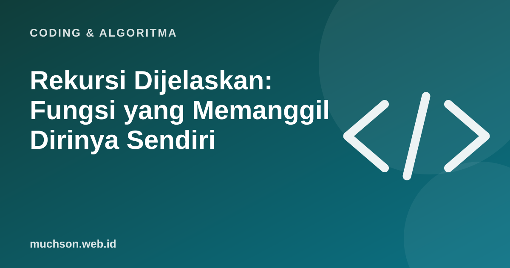

Beranda › Artikel › Coding & Algoritma
Coding & AlgoritmaRekursi Dijelaskan: Fungsi yang Memanggil Dirinya Sendiri
Rekursi sering terasa ajaib sampai Anda melihat strukturnya: fungsi memecah masalah menjadi versi yang lebih kecil dari dirinya, sampai masalahnya cukup kecil untuk dijawab langsung. Setelah itu, jawaban disusun kembali ke atas.

Dua bagian wajib
Contoh paling klasik: faktorial
def faktorial(n):
if n <= 1: # kasus dasar
return 1
return n * faktorial(n - 1) # kasus rekursif
print(faktorial(5)) # 120Untuk faktorial(3): 3 × faktorial(2) = 3 × (2 × faktorial(1)) = 3 × (2 × 1) = 6. Komputer menumpuk setiap pemanggilan di call stack, lalu menyelesaikannya dari yang paling dalam.
Fibonacci: rekursi yang boros
Bilangan Fibonacci: setiap bilangan adalah jumlah dua bilangan sebelumnya. Versi rekursif langsungnya sangat elegan, tetapi menghitung hal yang sama berulang kali.
def fib(n):
if n <= 1:
return n
return fib(n - 1) + fib(n - 2)Perbaikan: simpan hasil (memoization)
from functools import lru_cache
@lru_cache(maxsize=None)
def fib(n):
if n <= 1:
return n
return fib(n - 1) + fib(n - 2)
print(fib(50)) # cepat, bukan miliaran pemanggilanRekursi cocok untuk masalah yang berstruktur pohon atau bersarang: folder dalam folder, menjelajah graf, membagi dan menaklukkan. Untuk perulangan sederhana, for atau while biasanya lebih jelas dan hemat memori.